บุคคลสำคัญคืออะไร?
บุคคลสำคัญ คือ บุคคลที่มีอิทธิพล มีบทบาทหน้าที่ที่โดดเด่น หรือสร้างคุณูปการอย่างมากต่อสังคม ประเทศชาติ หรือโลกในด้านต่างๆ เช่น แม่ทัพผู้นำกองทัพชนะสงครามเหนือศัตรู ผู้คิดค้นนวัตกรรมเปลี่ยนโลก ผู้นำที่นำพาประเทศไปสู่ความก้าวหน้า เป็นต้น
บุคคลสำคัญอาจจะไม่ใช่คนที่ดีเสมอไป อาจเป็นคนที่มีความขัดแย้งอย่างมาก แต่กลับสร้างการเปลี่ยนแปลงทางสังคม ตั้งแต่ระดับประเทศไปจนถึงโลก ทำให้ถูกพูดถึงอยู่ไม่น้อยไปกว่าคนดี
บุคคลสำคัญต่างประเทศ
ต่อไปนี้จะนำเสนอบุคคลสำคัญต่างประเทศ นำเสนอประวัติคร่าวๆและผลงานพอให้เป็นที่รู้จัก โดยเลือกบุคคลสำคัญที่มีบทบาทสำคัญในเวทีโลกของยุคต่างๆ มาพอสังเขป
ก่อนอื่นต้องรู้จัก :
บิดาแห่งประวัติศาสตร์โลก คือ เฮอโรโดตัส (Herodotus)
ชาวกรีกโบราณ จากเมืองฮาลิคาร์นัสซัส ผู้เขียน "The Histories" บันทึกเหตุการณ์สงครามกรีก-เปอร์เซีย (ประมาณ 484 – 425 ปีก่อนคริสตกาล)
บิดาแห่งประวัติศาสตร์ตะวันออก คือ ซือหม่าเชียน (Sima Qian)
ชาวจีนสมัยราชวงศ์ฮั่น ผู้เขียนสารานุกรมประวัติศาสตร์ 3000 ปีของจีนชื่อว่า "สื่อจี้” (Shiji) บันทึกเหตุการณ์สงครามกรีก-เปอร์เซีย (ประมาณ 140 – 86 ปีก่อนคริสตกาล)
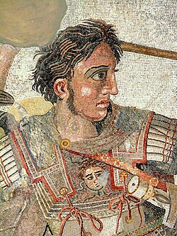
อเล็กซานเดอร์มหาราช (Alexander the Great)
เป็นกษัตริย์มาซิโดเนีย อัจฉริยะทางการทหารผู้ไม่เคยพ่ายแพ้ ขึ้นครองราชย์เมื่ออายุ 20 ปี ทรงขยายอาณาจักรจากกรีซไปจนถึงอินเดียภายใน 13 ปี สถาปนาจักรวรรดิที่กว้างใหญ่ไพศาล ก่อตั้งเมืองท่าอเล็กซานเดรีย และส่งเสริมวัฒนธรรมเฮลเลนิสติก สิ้นพระชนม์เมื่ออายุเพียง 32 ปี (356–323 ปีก่อนคริสตกาล)

ฮานิบาล บาร์กา (Hannibal Barca)
แม่ทัพและรัฐบุรุษชาวคาร์เธจผู้ยิ่งใหญ่ ศัตรูตัวฉกาจของสาธารณรัฐโรมันในช่วงสงครามปุนิกครั้งที่สอง ผลงานสำคัญ คือ การนำกองทัพบุกข้ามเทือกเขาแอลป์และชัยชนะที่เด็ดขาดในยุทธการคันเน เป็นอัจฉริยะด้านยุทธวิธีที่ได้รับการยกย่องตลอดกาล (ประมาณ 247-183 ปีก่อนคริสตกาล)
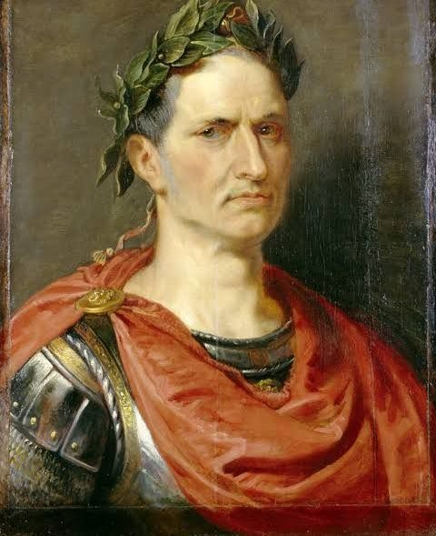
จูเลียส (ซีซาร์ Julius Caesar)
เป็นแม่ทัพและรัฐบุรุษผู้ยิ่งใหญ่ของสาธารณรัฐโรมัน ผู้พิชิตแคว้นกอลและสถาปนาตนเองเป็นเผด็จการตลอดชีวิต ผลงานคือการสร้างรากฐานสู่จักรวรรดิโรมันด้วยความสามารถทางการทหารและการปฏิรูปสังคม แต่จบชีวิตลงจากการถูกลอบสังหารโดยวุฒิสมาชิกในวันที่ 15 มีนาคม 44 ปีก่อนคริสตกาล (100-44 ปีก่อนคริสตกาล)
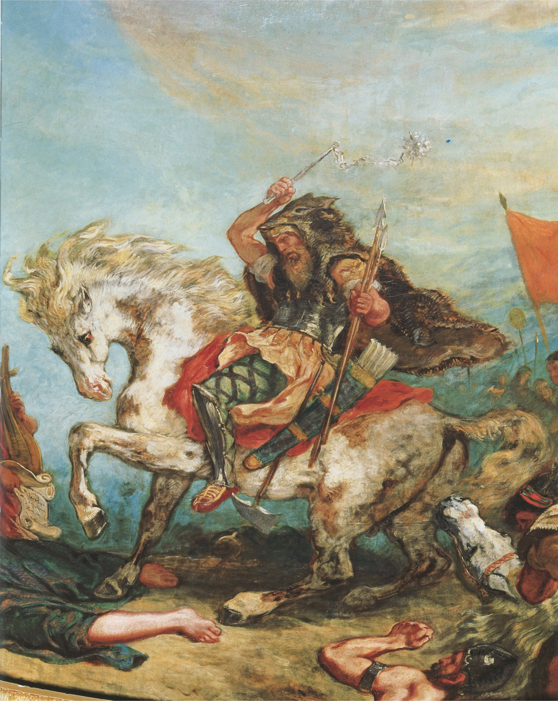
อทิลาร์ (Attila the Hun)
ผู้นำที่ยิ่งใหญ่ที่สุดของชนเผ่าฮัน ผู้ปกครองจักรวรรดิฮันที่กว้างใหญ่ในช่วงปี เป็นที่รู้จักในนาม "Scourge of God" (ภัยพิบัติจากพระเจ้า) สร้างความหวาดกลัวให้กับจักรวรรดิโรมันทั้งตะวันตกและตะวันออกด้วยการทำสงครามและการรุกรานที่ดุร้าย ผลงานสำคัญคือการรวมเผ่าฮันให้เป็นปึกแผ่นและรุกรานโรมันอย่างหนัก (ค.ศ. 434-453)
ซาลาดิน (Saladin)
ชื่อเต็มคือ เศาะลาฮุดดีน ยูซุฟ อิบน์ อัยยูบ เป็นสุลต่านชาวเคิร์ดผู้ก่อตั้งราชวงศ์อัยยูบีย์ ปกครองอียิปต์ ซีเรีย เยเมน และปาเลสไตน์ มีชื่อเสียงในฐานะผู้นำทัพมุสลิมที่ยึดกรุงเยรูซาเลมคืนจากพวกครูเสดได้สำเร็จในปี ค.ศ. 1187 และเป็นนักรบผู้มีเมตตา (ค.ศ. 1137–1193)
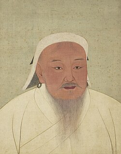
เจงกิสข่าน (Genghis Khan)
ชื่อเดิมเตมูจิน ผู้ก่อตั้งและข่านองค์แรกแห่งจักรวรรดิมองโกล ทรงรวบรวมเผ่าเร่ร่อนในทุ่งหญ้าสเตปป์ให้เป็นหนึ่งเดียว ก่อนแผ่ขยายอาณาจักรต่อเนื่องไปยังเอเชียกลางและจีน ยึดหลักการทหารที่เด็ดขาดและการทูตที่ยืดหยุ่น สร้างจักรวรรดิที่มีผืนแผ่นดินติดต่อกันใหญ่ที่สุดในประวัติศาสตร์ (ประมาณ ค.ศ.1162-ค.ศ. 1227)
โจนออฟอาร์ก (Joan of Arc หรือ Saint Joan of Arc)
วีรสตรีผู้กอบกู้ฝรั่งเศสในช่วงสงครามร้อยปี จากการนำทัพฝรั่งเศสปลดปล่อยเมืองออร์เลอ็องและผลักดันอังกฤษให้ออกจากแผ่นดินฝรั่งเศส เธอเกิดในครอบครัวชาวนา เชื่อว่าได้รับบัญชาจากพระเจ้าให้ช่วยฝรั่งเศส สุดท้ายถูกจับและเผาทั้งเป็น (ค.ศ. 1412–1431)
เฟเดอริกมหาราช (Frederick the Great)
เป็นกษัตริย์แห่งปรัสเซียราชวงศ์โฮเฮนโซลเลิร์น ครองราชย์ช่วงปี ค.ศ. 1740-1786 ทรงเป็นผู้นำทางการทหารที่เก่งกาจ ขยายอาณาเขตปรัสเซียให้ยิ่งใหญ่ผ่านสงครามไซลีเซีย และการแบ่งแยกโปแลนด์ ส่งเสริมยุคเรืองปัญญา และปฏิรูปกองทัพให้ล้ำสมัยทำให้ปรัสเซียกลายเป็นมหาอำนาจของยุโรป (24 มกราคม 1712 – 17 สิงหาคม 1786)
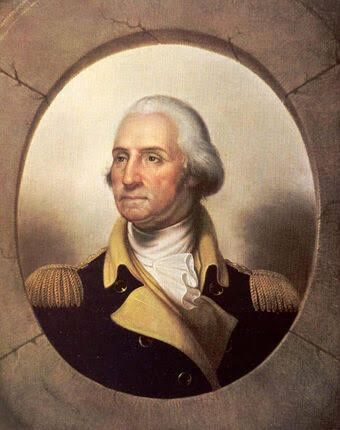
จอร์จ วอชิงตัน (George Washington)
คือบิดาผู้ก่อตั้งและประธานาธิบดีคนแรกของสหรัฐฯ ผู้นำกองทัพภาคพื้นทวีปทำสงครามชนะสงครามปฏิวัติอเมริกาเหนือบริเตนใหญ่ วางรากฐานรัฐบาลกลางที่แข็งแกร่ง และกำหนดมาตรฐานการดำรงตำแหน่งประธานาธิบดีด้วยการวางมือหลังครบสองวาระ (ค.ศ. 1789-1797)
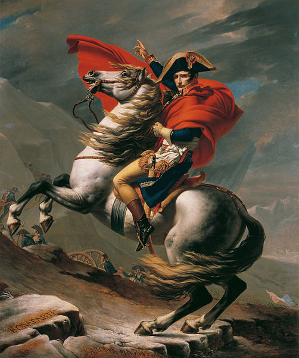
นโปเลียน โบนาปาร์ต (Napoleon Bonaparte)
คือจักรพรรดิและผู้นำทหารชาวฝรั่งเศสผู้เกรียงไกร มีชื่อเสียงจากการรัฐประหารขึ้นสู่อำนาจ ปฏิรูปกฎหมายและโครงสร้างการบริหารประเทศครั้งใหญ่ และทำสงครามขยายอำนาจครอบคลุมทวีปยุโรปในช่วงต้นศตวรรษที่ 19 สร้างจักรวรรดิฝรั่งเศสที่ยิ่งใหญ่ มีแผนการรบที่ล้ำยุคชนะมาหลายศึก ก่อนจะพ่ายแพ้ในศึกวอเตอร์ลู (15 สิงหาคม 1769 – 5 พฤษภาคม 1821)
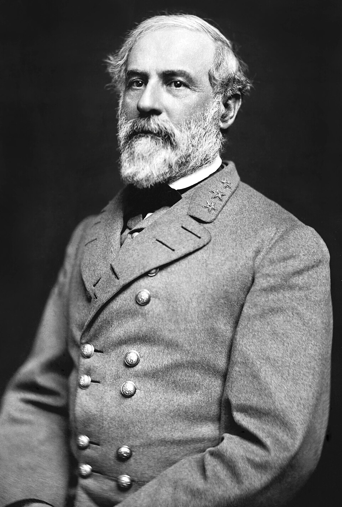
โรเบิร์ต ลี (Robert E. Lee)
เป็นนายพลฝ่ายสมาพันธรัฐอเมริกาที่มีชื่อเสียงโดดเด่นในช่วงสงครามกลางเมืองอเมริกา เป็นผู้นำกองทัพเวอร์จิเนียเหนือที่มีความสามารถทางยุทธวิธีสูง สามารถเอาชนะฝ่ายเหนือได้หลายสมรภูมิ แม้จะแพ้สงครามในที่สุด แต่ได้รับการยกย่องในเรื่องเกียรติยศและกลยุทธ์การรบ (1807–1870)
อ็อทโท ฟ็อน บิสมาร์ค (Otto von Bismarck)
เป็นรัฐบุรุษชาวปรัสเซีย-เยอรมัน ผู้นำการรวมชาติเยอรมนีสำเร็จและดำรงตำแหน่งนายกรัฐมนตรีคนแรกของจักรวรรดิเยอรมัน ใช้แนวทาง "เลือดและเหล็ก" (Blood and Iron) ในการเมืองและการทหาร ยกระดับเยอรมนีสู่มหาอำนาจของยุโรปผ่านสงคราม 3 ครั้ง (1815–1898)
แอร์วิน รอมเมล (Erwin Rommel)
จอมพลและยอดแม่ทัพบกเยอรมันในสงครามโลกครั้งที่ 2 ฉายา "จิ้งจอกทะเลทราย" (The Desert Fox) โดดเด่นด้านการวางแผนรบที่รวดเร็วและเด็ดเดี่ยวในแอฟริกาเหนือ เป็นที่ยอมรับในความสามารถและเกียรติยศเยี่ยงสุภาพบุรุษทหารทั้งจากฝ่ายเดียวกันและฝ่ายตรงข้าม (15 พฤศจิกายน 1891 - 14 ตุลาคม 1944)
บุคคลสำคัญของไทย
ในบทเรียนนี้จะไม่กล่าวถึงพระมหากษัตริย์พระองค์ใด แต่จะกล่าวบุคคลอื่นที่มีบทบาทในการพัฒนาประเทศไทย โดยนับตั้งแต่สมัยรัตนโกสินทร์
ก่อนอื่นต้องรู้จัก :
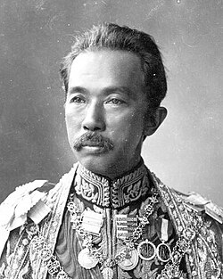
บิดาแห่งประวัติศาสตร์ไทย คือ สมเด็จพระเจ้าบรมวงศ์เธอ กรมพระยาดำรงราชานุภาพ (พระองค์เจ้าดิศวรกุมาร)
เป็นพระราชโอรสใน ร.4 ต้นราชสกุล "ดิศกุล" ทรงนิพนธ์หนังสือประวัติศาสตร์ โบราณคดีเป็นคนแรกๆ เป็นองค์ปฐมเสนาบดีกระทรวงมหาดไทย ผู้ปฏิรูประบบการปกครองส่วนภูมิภาค (เทศาภิบาล) วางรากฐานหอสมุดและพิพิธภัณฑสถานแห่งชาติ (21 มิถุนายน 2405 – 1 ธันวาคม 2486)
บุคคลสำคัญของไทย : พระบรมวงศานุวงศ์
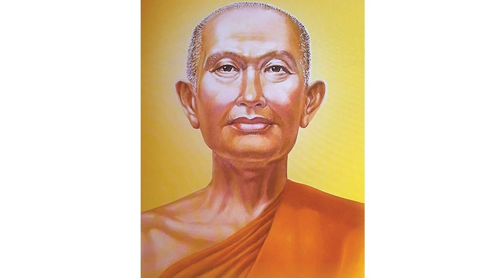
สมเด็จพระมหาสมณเจ้า กรมพระปรมานุชิตชิโนรส (พระองค์เจ้าวาสุกรี)
เป็นพระราชโอรสใน ร.1 ผนวชตลอดพระชนม์ชีพ ทรงเป็นสมเด็จพระสังฆราชองค์ที่ 7 แห่งกรุงรัตนโกสินทร์ และทรงเป็นยอดกวีเอก ผลงานสำคัญคือ ลิลิตตะเลงพ่าย ร่ายยาวมหาเวสสันดรชาดก และโคลงภาพคนต่างภาษา ได้รับการยกย่องจาก UNESCO เป็นบุคคลสำคัญของโลก (พ.ศ. 2333-2396)
สมเด็จพระมหาสมณเจ้า กรมพระยาวชิรญาณวโรรส
ทรงเป็นสมเด็จพระสังฆราชองค์ที่ 10 แห่งกรุงรัตนโกสินทร์ วัดบวรนิเวศราชวรวิหาร พระราชโอรสในรัชกาลที่ 4 ทรงเป็นผู้วางรากฐานการศึกษาและการปกครองคณะสงฆ์ไทยสมัยใหม่ จัดตั้งระบบการศึกษาพระปริยัติธรรม ทั้งแผนกธรรมและแผนกบาลี ตลอดจนการสอบธรรมสนามหลวง ผู้นิพนธ์หนังสือสำคัญ เช่น นวโกวาท และทรงปฏิรูปคณะสงฆ์ให้มีระเบียบวินัยมั่นคง (พระชันษา 61 ปี) (12 เมษายน 2403 – 2 สิงหาคม 2464)
สมเด็จพระเจ้าบรมวงศ์เธอ เจ้าฟ้ากรมพระยานริศรานุวัดติวงศ์
เป็นพระราชโอรสในรัชกาลที่ 4 ทรงได้รับการยกย่องเป็น "นายช่างใหญ่แห่งกรุงสยาม" ทรงปรีชาสามารถด้านศิลปกรรม สถาปัตยกรรม ออกแบบพระเมรุมาศ และวรรณคดี ดำรงตำแหน่งสำคัญ เช่น เสนาบดีกระทรวงโยธาธิการ พระคลังมหาสมบัติ กลาโหม และผู้สำเร็จราชการแทนพระองค์ (อายุ 83 ปี) (28 เมษายน พ.ศ. 2406 – 10 มีนาคม พ.ศ. 2490)
พระเจ้าบรมวงศ์เธอ กรมหลวงวงษาธิราชสนิท (พระองค์เจ้าชายนวม)
พระราชโอรสในรัชกาลที่ 2 ทรงเป็นนักปราชญ์และกวีคนสำคัญ ทรงได้รับมอบหมายให้ดูแลการแพทย์แผนไทยและเป็นแม่กองตรวจสอบหนังสือในสมัยรัชกาลที่ 3 และ 4 ผลงานเด่นคือบทกลอน นิราศ และแต่งตำราสมุนไพร ได้รับการยกย่องจาก UNESCO ให้เป็นบุคคลสำคัญของโลกสาขาปราชญ์และกวี (พ.ศ. 2351 - 2414)
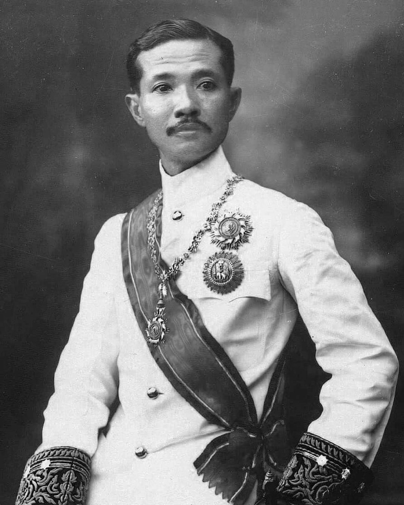
พระเจ้าบรมวงศ์เธอ กรมหลวงราชบุรีดิเรกฤทธิ์ (พระองค์เจ้ารพีพัฒนศักดิ์)
พระราชโอรสองค์ที่ 14 ในรัชกาลที่ 5 ทรงเป็น "พระบิดาแห่งกฎหมายไทย" ผู้ปฏิรูประบบศาลยุติธรรม วางรากฐานนิติบัญญัติ จัดตั้งโรงเรียนกฎหมายแห่งแรก และเป็นต้นราชสกุลรพีพัฒน์ วันสิ้นพระชนม์ 7 สิงหาคม กำหนดให้เป็นวัน วันรพี (อายุ 45 ปี) (21 ต.ค. 2417 -7 ส.ค. 2463)
สมเด็จพระเจ้าบรมวงศ์เธอ กรมพระยาเทวะวงศ์วโรปการ (พระองค์เจ้าเทวัญอุไทยวงศ์)
พระราชโอรสใน ร.4 เป็นองค์บิดาแห่งการทูตไทย ดำรงตำแหน่งเสนาบดีกระทรวงต่างประเทศยาวนาน ทรงวางรากฐานการบริหารราชการแผ่นดิน การต่างประเทศ และเป็นผู้คิดค้นปฏิทินสุริยคติไทย “เทวะประติทิน” (27 พ.ย. 2401 - 28 มิ.ย. 2466) (พระชันษา 64 ปี)
บุคคลสำคัญของไทย : ชาวต่างชาติ
พระสังฆราชฌ็อง-บาติสต์ ปาลเลอกัวซ์ (Jean-Baptiste Pallegoix)
เป็นบาทหลวงฝรั่งเศสคณะมิสซังต่างประเทศแห่งกรุงปารีส ผู้ดำรงตำแหน่งประมุขมิสซังคาทอลิกในสยามสมัยรัชกาลที่ 3-4 เป็นพระสหายสนิทของรัชกาลที่ 4 ผลงานสำคัญคือการทำพจนานุกรม 4 ภาษา (สัพะ พะจะนะ พาสา ไท) แต่งหนังสือ “เล่าเรื่องกรุงสยาม” และนำวิทยาการตะวันตกเข้ามาเผยแพร่ในสยาม (พ.ศ. 2348 - 2405)
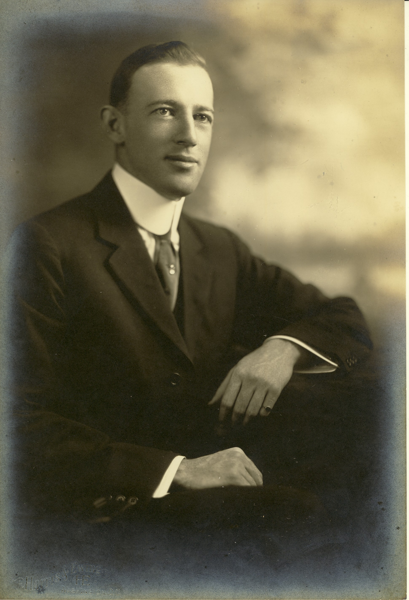
พระยากัลยาณไมตรี (ดร. ฟรานซิส บี. แซร์)
ชาวอเมริกันผู้เป็นบุตรเขยประธานาธิบดีสหรัฐฯ (วูดโรว์ วิลสัน) ดำรงตำแหน่งที่ปรึกษาการต่างประเทศและเจรจาแก้ไขสนธิสัญญาที่เสียเปรียบกับต่างชาติในสมัย ร.6-ร.7 ผลงานสำคัญคือการทำให้สยามได้อำนาจอธิปไตยทางกฎหมายและภาษีคืนมา และมีส่วนร่วมร่างรัฐธรรมนูญฉบับแรก (30 เมษายน 2428 - 29 มีนาคม 2515)
ศาสตราจารย์ศิลป์ พีระศรี เดิมชื่อ (Corrado Feroci)
ชาวอิตาลีผู้กลายเป็นสัญชาติไทย คือปูชนียบุคคล "บิดาแห่งศิลปะสมัยใหม่ของไทย" ผู้ก่อตั้งมหาวิทยาลัยศิลปากรและวางรากฐานการศึกษาศิลปะแบบตะวันตกควบคู่ศิลปะไทย ผลงานสำคัญได้แก่การออกแบบอนุสาวรีย์สำคัญมากมาย เช่น อนุสาวรีย์ชัยสมรภูมิ ท้าวสุรนารี และพระบรมราชานุสาวรีย์หลายแห่ง (15 กันยายน 2435 - 14 พฤษภาคม 2505)
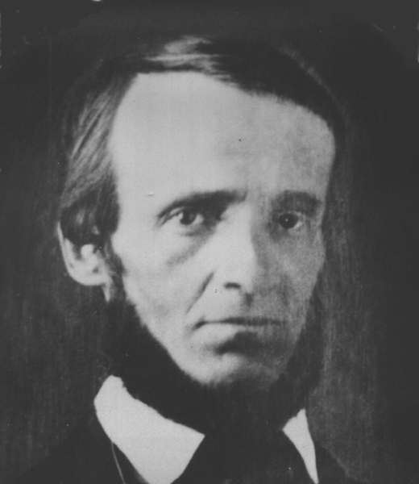
นายแพทย์แดน บีช แบรดลีย์ (Dan Beach Bradley) หรือ "หมอบรัดเลย์"
เป็นมิชชันนารีและนายแพทย์ชาวอเมริกันที่เข้ามาในสมัยรัชกาลที่ 3 (พ.ศ. 2378) เป็นผู้บุกเบิกการแพทย์แผนตะวันตก ได้ทำการผ่าตัดครั้งแรกในสยามทั้งผ่าตัดเล็กและใหญ่ การปลูกฝีป้องกันไข้ทรพิ, ก่อตั้งโรงพิมพ์แห่งแรก ตีพิมพ์หนังสือพิมพ์ บางกอกรีคอร์เดอร์ และพจนานุกรมไทยฉบับแรก (18 กรกฎาคม 1804 – 23 มิถุนายน 1873)
บุคคลสำคัญของไทย : ข้าราชการและสามัญชน
สุนทรภู่ (พระสุนทรโวหาร)
เป็นกวีเอก 4 แผ่นดินสมัยรัตนโกสินทร์ โดดเด่นด้านกลอนตลาดที่มีสัมผัสในแพรวพราว มีผลงานสำคัญที่สุดคือ พระอภัยมณี, นิราศภูเขาทอง สุภาษิตสอนหญิง และสวัสดิรักษา ได้รับยกย่องจาก UNESCO ให้เป็นบุคคลสำคัญของโลกทางวรรณกรรม วันที่ 26 มิถุนายน กำหนดให้เป็นวันสุนทรภู่ (26 มิถุนายน 2329 - พ.ศ. 2398)
พระยาอนุมานราชธน (ยง เสฐียรโกเศศ)
เป็นนักปราชญ์และนักวิชาการวัฒนธรรมคนสำคัญของไทย ได้รับยกย่องจาก UNESCO ให้เป็นบุคคลสำคัญของโลก เกิดในรัชกาลที่ 5 มีชื่อเสียงจากการศึกษาประเพณี วัฒนธรรม ภาษาไทย และเป็นอดีตอธิบดีกรมศิลปากร ผู้ร่างกฎหมายจัดตั้งมหาวิทยาลัยศิลปากร มีผลงานเขียนเชิงวิชาการกว่า 200 เรื่อง (14 ธันวาคม 2431 - 12 กรกฎาคม 2512)
พระยารัษฎานุประดิษฐ์มหิศรภักดี (คอซิมบี๊ ณ ระนอง)
เป็นนักปกครองและพัฒนาที่สำคัญในสมัยรัชกาลที่ 5-6 ผู้ได้รับฉายา "บิดาแห่งยางพาราไทย" โดยนำยางพาราต้นแรกมาปลูกที่ตรัง พัฒนาโครงสร้างพื้นฐาน และเปลี่ยนเมืองตรังจากเหมืองแร่สู่เมืองเกษตรกรรม (8 เมษายน พ.ศ. 2400 – 10 เมษายน พ.ศ. 2456 อายุ 56 ปี)
สมเด็จเจ้าพระยาบรมมหาศรีสุริยวงศ์ (ช่วง บุนนาค)
ขุนนางผู้ใหญ่สมัยรัชกาลที่ 4-5 ผู้มีบทบาทสูงในการปฏิรูปประเทศและเป็นผู้สำเร็จราชการแทนพระองค์ในรัชกาลที่ 5 ผลงานสำคัญคือการทำนุบำรุงราชการแผ่นดินทำนุบำรุงหัวเมืองชายทะเล ขุดคลองภาษีเจริญและคลองดําเนินสะดวก ต่อเรือกำปั่นไฟ และสร้างพระนครคีรี (เขาวัง) ที่จังหวัดเพชรบุรี (อายุ 74 ปี) (23 ธันวาคม พ.ศ. 2351 - 19 มกราคม พ.ศ. 2425)
จอมพล ป.(แปลก) พิบูลสงคราม (แปลก ขีตตะสังคะ)
นายกรัฐมนตรีคนที่ 3 ของไทย ดำรงตำแหน่งนานที่สุด เป็นหนึ่งในคณะราษฎร ผลักดันนโยบายชาตินิยม เปลี่ยนชื่อประเทศจากสยามเป็นไทย เปลี่ยนแปลงวัฒนธรรมให้ทันสมัย (สวมหมวก เลิกกินหมาก) และสร้างอนุสาวรีย์ชัยสมรภูมิ เป็นผู้นำในยุคสงครามโลกครั้งที่สองและพัฒนาสังคมไทยสู่ความทันสมัย (14 กรกฎาคม 2440 – 11 มิถุนายน 2507)
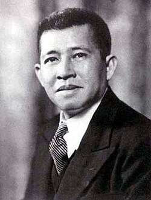
ศาสตราจารย์ ดร. ปรีดี พนมยงค์ (หลวงประดิษฐมนูธรรม)
เป็นผู้นำคณะราษฎรสายพลเรือน แกนนำสำคัญในการเปลี่ยนแปลงการปกครอง 2475 ผู้ร่างรัฐธรรมนูญฉบับแรก ผู้ก่อตั้งมหาวิทยาลัยธรรมศาสตร์ หัวหน้าเสรีไทยช่วงสงครามโลกครั้งที่ 2 และอดีตนายกรัฐมนตรีคนที่ 7 ที่ได้รับยกย่องเป็นรัฐบุรุษอาวุโส ( 11 พฤษภาคม 2443 - 2 พฤษภาคม 2526 รวมอายุ 83 ปี)
พลเอก พระยาพหลพลพยุหเสนา (พจน์ พหลโยธิน)
นายกรัฐมนตรีคนที่ 2 ของไทยและหัวหน้าคณะราษฎรฝ่ายทหาร ผู้นำการเปลี่ยนแปลงการปกครอง 2475 เป็นนักการทหารที่สมถะและได้รับการยกย่องว่าเป็น “เชษฐบุรุษประชาธิปไตย” ดำรงตำแหน่งนายกฯ 5 สมัย ผลงานสำคัญคือการวางรากฐานประชาธิปไตย สร้างความมั่นคงหลังการปฏิวัติ และส่งเสริมการพัฒนาท่าเรือกรุงเทพ (29 มีนาคม 2430 – 14 กุมภาพันธ์ 2490)
พันตรีควง อภัยวงศ์
เป็นนักการเมืองคนสำคัญ นายกรัฐมนตรีคนที่ 4 ของไทย 4 สมัย เป็นหนึ่งในคณะราษฎร ร่วมก่อการปฏิวัติ 2475 อดีตอธิบดีกรมไปรษณีย์โทรเลข และผู้ก่อตั้งพรรคประชาธิปัตย์ โดดเด่นด้านความเป็นผู้นำในช่องท้ายสงครามโลกครั้งที่ 2 และเป็นหัวหน้าฝ่ายค้านที่มีบทบาทสูง (17 พฤษภาคม 2445 -15 มีนาคม 2511 65 ปี)
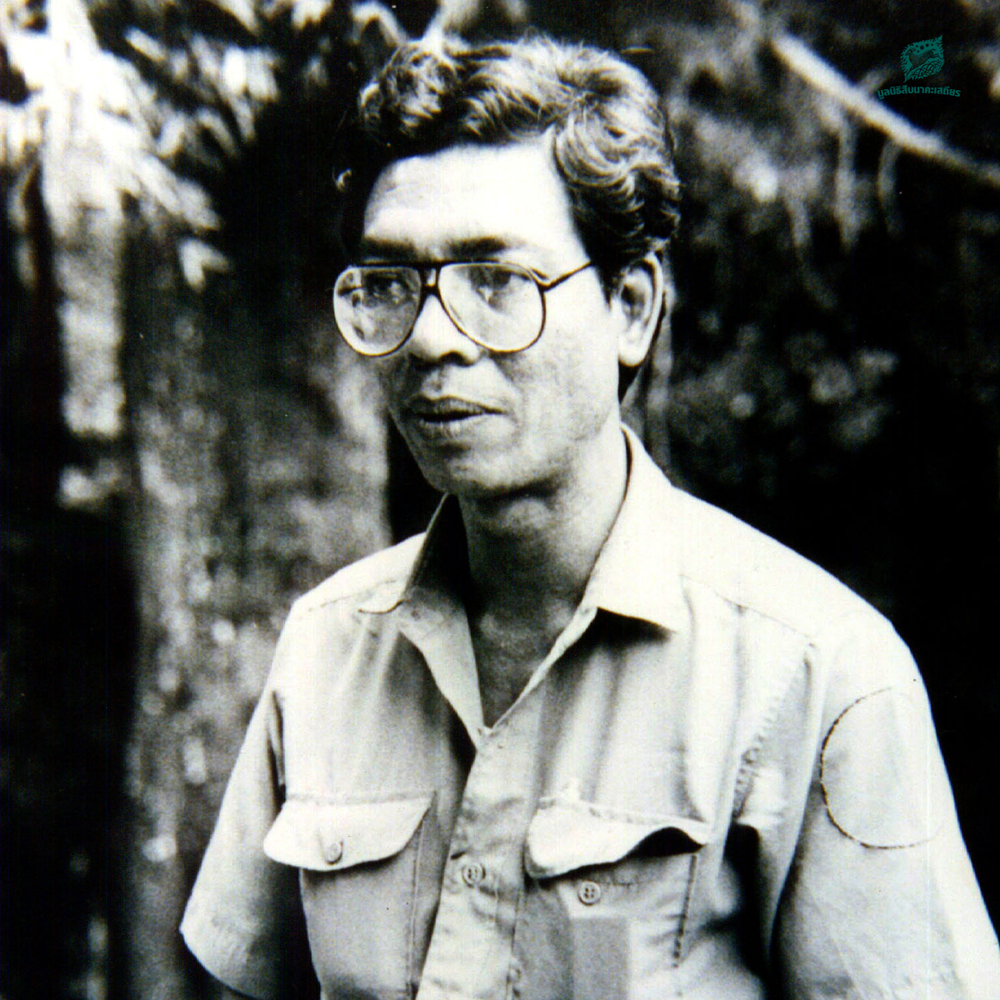